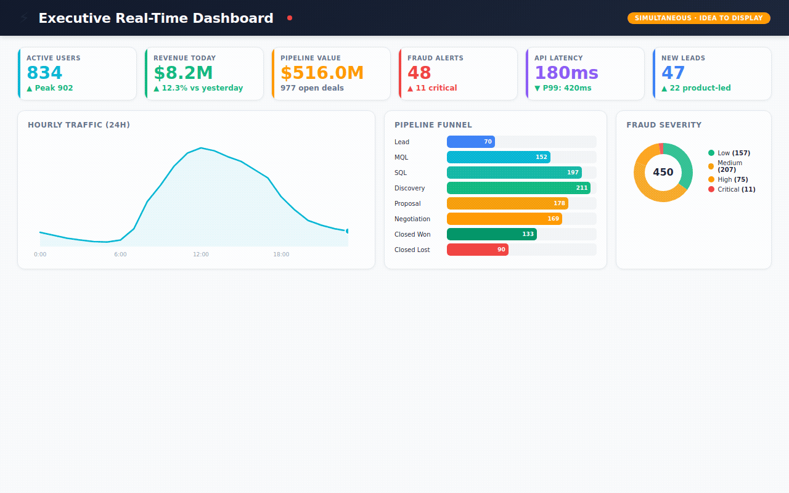
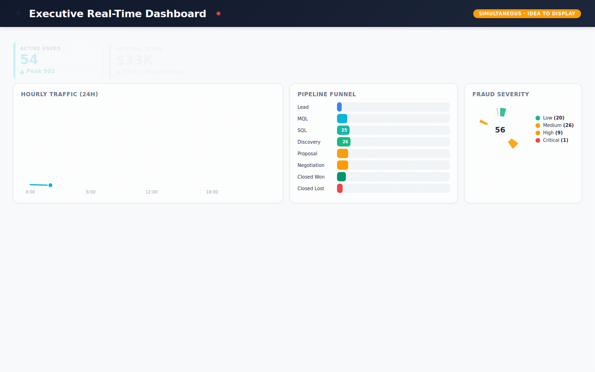
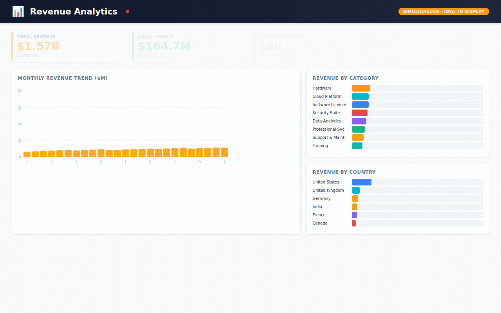
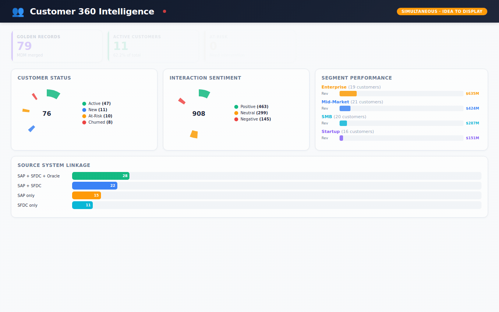
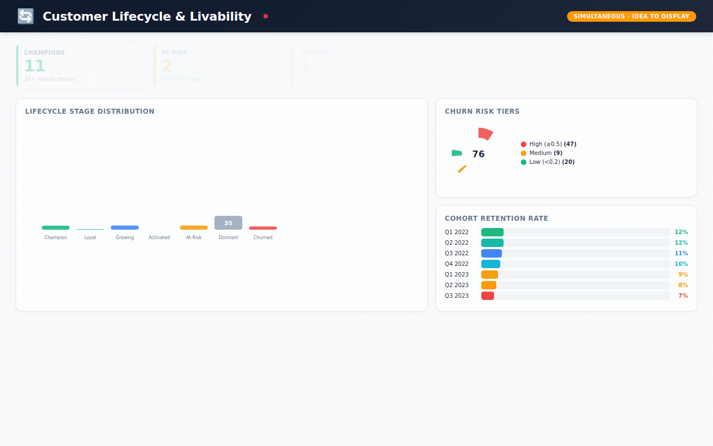
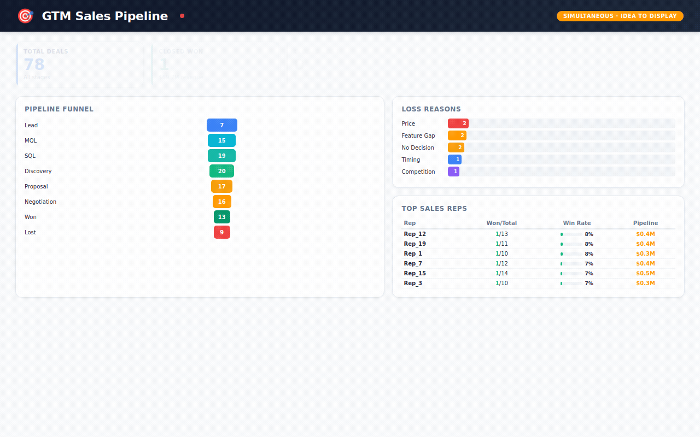
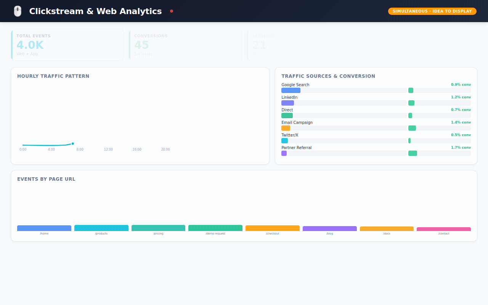
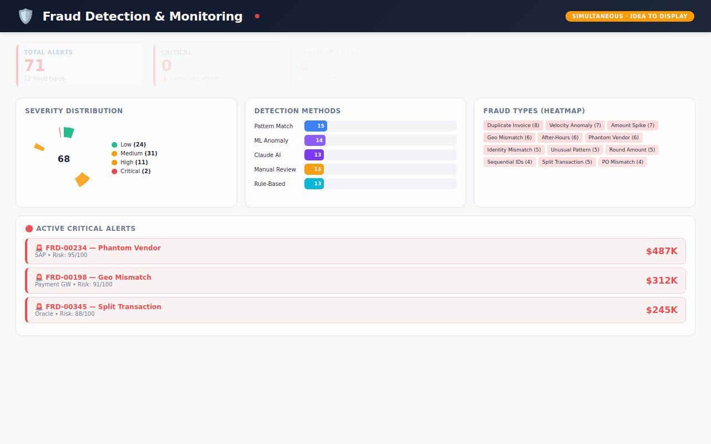
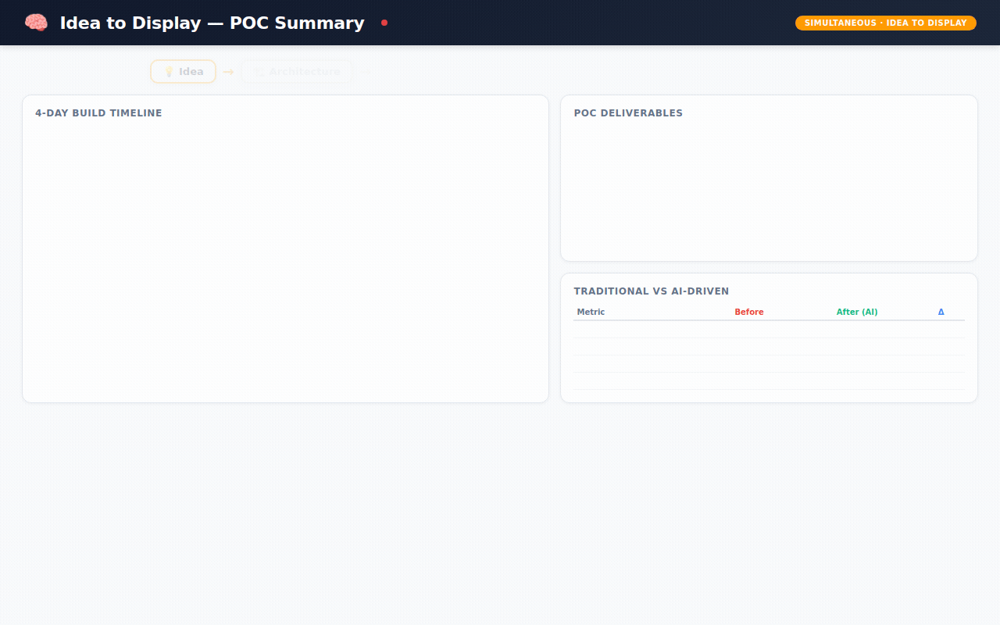
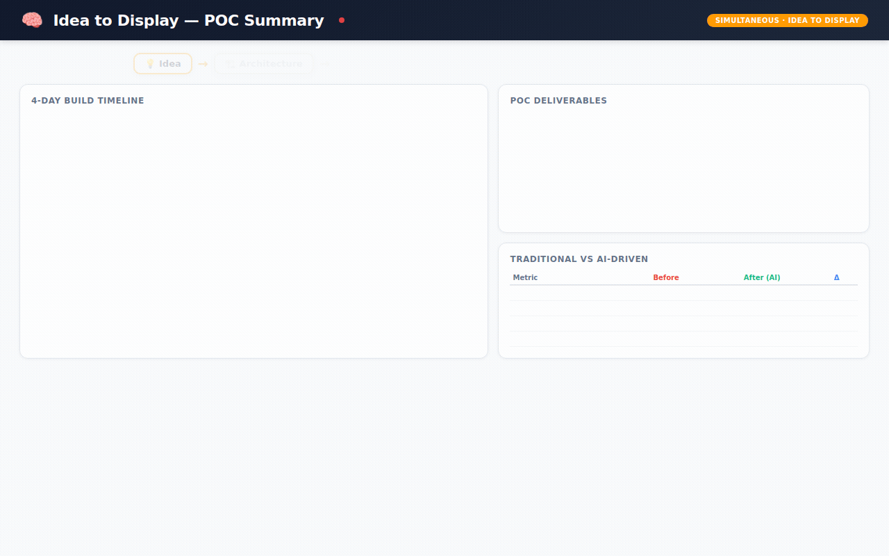

Disclaimer: This article and repository are shared strictly for educational and demonstration purposes. The work shown is a proof-of-concept blueprint intended to showcase modern architecture patterns and the potential of AI-assisted development. This is not a production deployment, not a client deliverable, and not a substitute for enterprise consulting, security reviews, compliance validation, or operational readiness assessments. No consulting firm, system integrator, or professional services organization is being criticized or targeted. Large-scale enterprise implementations often require deep domain expertise, governance, stakeholder alignment, regulatory compliance, and long-term support that goes beyond rapid prototyping. The intent of this post is to highlight how emerging AI agent workflows can accelerate engineering execution—not to diminish the value of experienced professionals.
 dark background
dark background light background
light backgroundThe Demo LakeWareHouse Github repo is public.
You can play with the code as you wish. The complete dashboard with fullblown visualizations are available.
 
I packaged the entire project as a GitHub-ready repository. Everything is there:
📁 src/data_generation/ — 7 Python modules that generate all 36,650 records (fully reproducible, seeded random)
📁 src/agents/ — The agentic loop, tool definitions, and orchestrator
📁 src/pipelines/ — SAP extraction, Salesforce CDC, MDM matching, Silver transformation, Gold dbt models
📁 src/dashboards/ — 8-tab interactive React dashboard
📁 docs/ — Technical documentation, data model reference, dashboard guide
📁 tests/ — 22 data quality tests
📁 infra/terraform/ — AWS infrastructure-as-code
First, let me explain the problem in plain English.
Every big company has the same headache. Customer information is scattered everywhere.
Your sales team uses Salesforce. Your finance team uses SAP. Your operations team uses Oracle. Your website tracks its own data. Your support team has yet another system.
Same customer. Five different records. Five different spellings of their name. Three different phone numbers. No one knows which is correct.
This isn't a minor inconvenience. It's a multi-billion dollar problem.
When a bank can't recognize that "John Smith" in their loan system and "J. Smith" in their credit card system are the same person, bad things happen. They send duplicate marketing. They miss fraud signals. They can't answer basic questions like "how much is this customer worth to us?"
The industry calls the solution "Master Data Management" — or MDM. It's the process of cleaning up this mess, matching records together, and creating one trusted "golden record" per customer.
And traditionally, here's what it takes to build one:
I've watched this movie play out a dozen times. At companies you'd recognize. Same script. Same timeline. Same budget overruns.
I wanted to see if there was a radically different way.
The experiment I called "Idea to Display"
The name says it all. Start with an idea. End with something you can display — a working dashboard, a live demo, a system that actually runs.
Skip the 6 months of PowerPoint. Skip the architecture committee. Skip the staffing plan.
Instead, I built 6 specialized AI agents — think of them as digital specialists, each with a narrow job — and let them build the platform collaboratively.
Here's how I'd explain each one to a non-technical person:
🔌 Agent 1 — The Extractor "Go connect to SAP, Salesforce, and Oracle. Figure out what data is in each system. Pull it out and organize it."
🧹 Agent 2 — The Cleaner "Take all that raw data and clean it up. Fix the formatting. Remove the duplicates. Make everything consistent."
🔗 Agent 3 — The Matcher "Now the hard part. Look at 'John Smith' in SAP and 'J. Smith' in Salesforce. Are they the same person? Score it. If you're 92%+ confident, merge them automatically. If you're unsure, flag it for a human to review."
📊 Agent 4 — The Modeler "Organize everything into a clean structure that analysts and dashboards can actually use. Think of it like organizing a messy filing cabinet into a well-labeled library."
⚡ Agent 5 — The Orchestrator "Make sure all of this runs in the right order, every day, automatically. If something breaks, alert someone immediately."
📝 Agent 6 — The Documenter "Write down everything the other 5 agents did. Every table, every rule, every decision. Create the instruction manual that humans always promise to write but never do."
For the technical folks reading this: each agent runs on Claude Opus 4.6's tool-use API. The core loop is simple — Claude decides which tool to call (query a database, write a pipeline, run a test), we execute it, feed the result back, and Claude decides the next step. It loops until the job is done. The agents write real PySpark, real dbt models, real Terraform. Not pseudocode. Not summaries. Production code.
What 4 days actually produced
This is where it gets real. Here's what exists — not as a concept, but as working code sitting in a GitHub repository right now:
The data (36,650+ records across 11 tables):
Imagine a mid-size B2B software company. We simulated their entire data universe:
→ 500 customers — each one a "golden record" merged from multiple source systems, with a confidence score showing how certain we are the match is correct
→ 3,500 orders — with revenue, cost, profit, discounts, and which sales rep closed the deal
→ 6,000 customer interactions — emails, phone calls, support tickets, demo requests — each tagged with sentiment (was the customer happy, neutral, or frustrated?)
→ 25,000 website events — every page view, form submission, and button click, showing which marketing campaigns actually drive conversions
→ 1,200 sales deals — tracking every opportunity from first lead to closed-won or closed-lost, with win rates by rep, lead source, and competitor
→ 450 fraud alerts — flagged by 5 different detection methods (machine learning, AI analysis, pattern matching, rule engines, manual review) with severity scoring and investigation tracking
→ 168 hours of real-time metrics — simulating what an executive dashboard would show: active users, API latency, revenue, system health, updated every hour
The dashboard (8 interactive tabs):
Not a static chart. A fully interactive React application where you can explore every dimension of the business:
Executive Pulse — the "open your laptop Monday morning" view. Revenue today, active users right now, pipeline health, fraud alerts, system uptime. All at a glance.
Revenue Analytics — monthly trends, which product categories drive revenue, which countries are growing fastest.
Customer 360 — the holy grail. One view per customer showing their status, segment, sentiment, lifetime value, and every interaction.
Customer Lifecycle — are customers thriving or fading? Champions vs. at-risk vs. churned. Churn risk scores. Health metrics. Recommended actions for each stage.
Sales Pipeline — the full funnel from lead to close. Which reps are performing? Which lead sources have the best win rates? Why are we losing deals?
Website Analytics — where do visitors come from? Which pages convert? Which marketing campaigns are worth the spend?
Fraud Monitoring — active alerts ranked by severity. Which detection method caught it? Is it confirmed fraud or a false alarm? What's the financial impact?
Data Governance — the MDM health check. How many records auto-merged? How many need human review? Which source systems are linked? What's the data quality score?
The code:
→ 21 Python files (data generation, pipelines, agents, tests)
→ dbt SQL models for the star schema
→ Terraform infrastructure-as-code for AWS deployment
→ 22 automated data quality tests — all passing ✅
The comparison that keeps me up at night
I want to be careful here. This is a POC — a proof of concept. Deploying this in a real enterprise with real security requirements, real compliance audits, and real organizational politics takes more than 4 days.
But the fundamental insight stands: the bottleneck in enterprise data has shifted from "can we build it?" to "can we think clearly about what to build?"
The AI handles the execution. Humans handle the judgment.
5 things I learned that surprised me
1. The AI didn't replace the architect. It made architecture matter MORE. I still had to decide: What's the matching threshold? How do we handle data from systems that disagree? What's the right grain for each fact table? These are judgment calls that require experience.
But once I made those decisions, the AI executed them in minutes instead of months. The architect becomes the bottleneck — which, honestly, is where the bottleneck should be.
2. Documentation happened for the first time in my career. I've worked on projects with $10M budgets where the documentation was a half-finished Confluence page. Here, it was auto-generated. Every table has a data dictionary. Every pipeline has a runbook. Not because someone was disciplined — but because Agent 6 made it effortless.
3. The "matching problem" in MDM is now solvable. The hardest part of MDM has always been: "Are these two records the same person?" Getting the weights right. Handling edge cases. Tuning thresholds. With AI agents, I could iterate on matching logic in minutes. Try 30% name weight vs. 40%. See the results. Adjust. In the old world, each iteration was a 2-week sprint.
4. Sample data changes the sales conversation. When you can show a prospect a working dashboard with realistic data in their industry — not mockups, not wireframes, an actual running system — the conversation shifts from "Can your team do this?" to "When can we start?"
5. The real disruption isn't the technology. It's the timeline. A 14-month project has organizational gravity. It accumulates stakeholders, scope creep, steering committees, and change requests. A 4-day POC is too fast for bureaucracy to interfere. You build it, show it, and decide. That velocity changes everything about how enterprise software gets adopted.
What this means — and what it doesn't
What it means:
Small teams can now tackle problems that used to require small armies
The cost of proving out a data architecture just dropped by 10x
Documentation, testing, and data quality are no longer "nice to have" — they're generated by default
Enterprise data projects can start with a working demo instead of a 60-page requirements document
What it doesn't mean:
→ Consultants are obsolete (the good ones are more valuable than ever — they become AI-augmented architects)
→ You don't need humans (you absolutely do — for judgment, stakeholder management, security, and governance)
→ AI-generated code is always production-ready (it needs review, testing, and hardening — just like human-written code)
→ This works for every problem (it works best for well-understood patterns like ETL, MDM, and star schema modeling)
Where this is heading
At Simultaneous, we're building on this foundation. Our thesis is that AI agents shouldn't just generate code — they should operate entire business workflows. We call them AGOs: Artificial General Operators.
The MDM Lakehouse was the first proof point. But the "Idea to Display" pattern works for data migration, regulatory compliance, real-time analytics, data mesh — any enterprise data challenge where the architecture is well-understood but the execution is expensive.
The $90 billion integration tax isn't disappearing. But who pays it — and how — is changing fast.
I'd love to hear from you:
→ If you've built with AI agents in the enterprise, what patterns worked?
→ If you're a data architect, does this match or challenge your experience?
→ If you're a non-technical leader, would a 4-day working demo change how you evaluate vendors?
Drop your thoughts in the comments. I read every one.